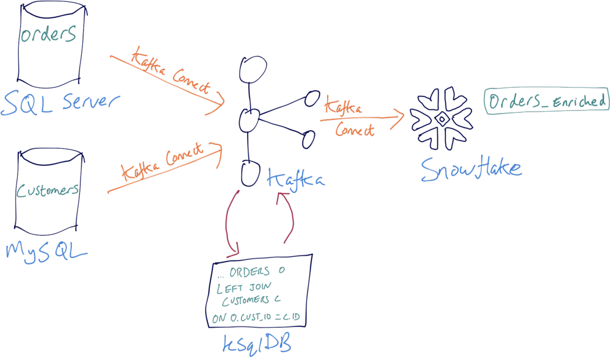

Denormalize Change Data Capture (CDC) for Orders
What is it?
If you have transactional events for orders in a marketplace, you can stream the Change Data Capture (CDC) and denormalize the events. Denormalization is a well-established pattern for performance because querying a single table of enriched data will often perform better than querying across multiple at runtime. You can consume the denormalized events from downstream applications in your business, or stream them to another destination. This recipe demonstrates this principle by streaming from a SQL Server, denormalizing the data, and writing to Snowflake.

Step-by-step
Setup your Environment
Setup your environment in Confluent Cloud, a fully-managed Apache Kafka service.
Then execute the recipe with SQL syntax using Confluent Cloud ksqlDB, which has language for processing the data in real-time (and will soon support connector integration for reading and writing data to other data sources and sinks).
Read the data in
Confluent Cloud offers pre-built, fully managed connectors that make it easy to instantly connect to popular data sources and end systems in the cloud. This recipe shows one example of a data source, but you can substitute your own preferred connector to use any data source. The principles are the same, just modify the connector configuration shown below to fit your deployment (see documentation).
To run a fully-managed connector to write the data into Kafka topics, use Confluent Cloud Console or Confluent CLI command confluent connect create --config <file>, submit each connector separately.
Change Data Capture (CDC) for orders is being written to a SQL Server database, and there is an Oracle database with customer data.
{
'connector.class' : 'SqlServerCdcSource',
'name' : 'recipe-sqlservercdc-orders',
'kafka.api.key' : '<my-kafka-api-key>',
'kafka.api.secret' : '<my-kafka-api-secret>',
'database.hostname' : '<db-name>',
'database.port' : '1433',
'database.user' : '<database-username>',
'database.password' : '<database-password>',
'database.dbname' : 'database-name',
'database.server.name' : 'sql',
'table.include.list' :'<table_name>',
'snapshot.mode' : 'initial',
'output.data.format' : 'JSON',
'tasks.max' : '1'
}
{
'connector.class' : 'OracleDatabaseSource',
'name' : 'recipe-oracle-customers',
'connector.class' : 'OracleDatabaseSource',
'kafka.api.key' : '<my-kafka-api-key>',
'kafka.api.secret' : '<my-kafka-api-secret>',
'topic.prefix' : 'oracle_',
'connection.host' : '<my-database-endpoint>',
'connection.port' : '1521',
'connection.user' : '<database-username>',
'connection.password' : '<database-password>',
'db.name' : '<db-name>',
'table.whitelist' : 'CUSTOMERS',
'timestamp.column.name' : 'created_at',
'output.data.format' : 'JSON',
'db.timezone' : 'UCT',
'tasks.max' : '1'
}
Optional: If you do not have a real data source to connect to with properly formatted data, or you just want to execute this recipe without external dependencies, no worries! In the next section, we'll show you how to insert values into the streams.
Run stream processing app
This streams the user orders and denormalizes the data by joining facts (orders) with the dimension (customer).
-- Stream of user orders:
CREATE STREAM orders (
ORDER_ID BIGINT,
CUSTOMER_ID BIGINT,
ITEM VARCHAR,
ORDER_TOTAL_USD DOUBLE
) WITH (
kafka_topic = 'orders',
value_format = 'json',
partitions = 6
);
-- Register the existing stream of customer data
CREATE STREAM CUST_RAW_STREAM (
ID BIGINT,
FIRST_NAME VARCHAR,
LAST_NAME VARCHAR,
EMAIL VARCHAR
) WITH (
KAFKA_TOPIC='customers',
VALUE_FORMAT='JSON',
PARTITIONS = 6
);
-- Register the customer data topic as a table
CREATE TABLE customer (
ID BIGINT PRIMARY KEY
) WITH (
KAFKA_TOPIC='CUST_RAW_STREAM',
VALUE_FORMAT='JSON',
PARTITIONS=6
);
-- Denormalize data: joining facts (orders) with the dimension (customer)
CREATE STREAM ORDERS_ENRICHED AS
SELECT
O.order_id AS order_id,
O.item AS item,
O.order_total_usd AS order_total_usd,
C.first_name || ' ' || C.last_name AS full_name,
C.email AS email
FROM ORDERS O
LEFT JOIN
CUSTOMERS C
ON O.customer_id = C.id;
In the previous section Read the data in, if you did not have a real data source to connect to, you can now use ksqlDB to insert mock data into source topics with the following statements:
INSERT INTO orders (order_id, customer_id, item, order_total_usd) VALUES (44697328, 375, 'book', 29.99);
INSERT INTO orders (order_id, customer_id, item, order_total_usd) VALUES (44697329, 375, 'guitar', 215.99);
INSERT INTO orders (order_id, customer_id, item, order_total_usd) VALUES (44697330, 983, 'thermometer', 12.99);
INSERT INTO orders (order_id, customer_id, item, order_total_usd) VALUES (44697331, 983, 'scarf', 32.99);
INSERT INTO orders (order_id, customer_id, item, order_total_usd) VALUES (44697332, 375, 'doormat', 15.99);
INSERT INTO orders (order_id, customer_id, item, order_total_usd) VALUES (44697333, 983, 'clippers', 65.99);
INSERT INTO customers (id, first_name, last_name, email) VALUES (375, 'Janice', 'Smith', 'jsmith@mycompany.com');
INSERT INTO customers (id, first_name, last_name, email) VALUES (983, 'George', 'Mall', 'gmall@mycompany.com');
Write the data out
Any downstream application or database can receive the denormalized data.
{
'connector.class' : 'SnowflakeSink',
'name' : 'recipe-snowflake-analyzed_clickstream',
'kafka.api.key' : '<my-kafka-api-key>',
'kafka.api.secret' : '<my-kafka-api-secret>',
'topics' : 'ORDERS_ENRICHED',
'input.data.format' : 'JSON',
'snowflake.url.name' : 'https://wm83168.us-central1.gcp.snowflakecomputing.com:443',
'snowflake.user.name' : '<login-username>',
'snowflake.private.key' : '<private-key>',
'snowflake.database.name' : '<database-name>',
'snowflake.schema.name' : '<schema-name>',
'tasks.max' : '1'
}